En esta aplicación se estudia la polarización de la luz y su reflexión y refracción en medios isótropos. Una primera ventana muestra cómo conseguir los diferentes estados de polarización de la luz a partir de la superposición de dos ondas planas con ciertas características. Una segunda y tercera ventana permiten ver el comportamiento de las ondas reflejada y transmitida dependiendo de las propiedades de una onda incidente sobre la superficie de separación de dos medios. El segundo medio puede ser dieléctrico o conductor. Se estudia tanto la relación de amplitudes (coeficientes de Fresnel) como la variación de la elipse de polarización.
En esta ventana se estudia la superposición de dos ondas planas con sus vectores eléctricos perpendiculares, que viajan en la misma dirección, tienen la misma frecuencia, amplitudes diferentes y desfasadas entre sí.
Las barras de desplazamiento permiten modificar las amplitudes de las ondas p (Ap) y s (As) y el desfase δ entre ellas. El gráfico situado en la parte inferior representa ambas ondas. Los campos eléctricos Ep y Es asociados pueden expresarse como:
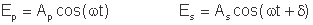
El campo eléctrico resultante genera, al propagarse, una espiral de paso elíptico, que se representa en el gráfico superior izquierdo. Se indican asimismo las características de dicha elipse de polarización: las longitudes de los semiejes mayor y menor, y el ángulo de la elipse respecto al eje p, en grados. También se indica el vector de Stokes S que describe el estado de polarización de la luz. Los parámetros de Stokes se calculan según:
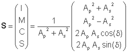
El signo del parámetro S indica si la luz es dextrógira (S>0), es decir, que gira en el sentido de las agujas del reloj, o levógira (S<0), cuando gira en sentido antihorario. Esto se indica dentro del recuadro negro de la elipse con una D o con una L, respectivamente.
En esta ventana se estudia la reflexión y refracción de la luz en medios dieléctricos isótropos, haciendo hincapié en las fórmulas de Fresnel, que especifican los valores que toma la amplitud del campo al cambiar de medio o reflejarse, en función de la amplitud incidente. Se supone además que los medios son no absorbentes para las longitudes de onda con las que se trabaja.
Si una onda incide sobre una superficie que separa dos medios de índices de refracción n y n' con un ángulo φ (respecto a la normal a la superficie), ésta se refleja con un ángulo de reflexión igual al incidente y se transmite al segundo medio con un ángulo refractado φ' dado por la ley de Snell:
Las barras de desplazamiento permiten modificar los índices de refracción de los dos medios y el ángulo de incidencia. La aplicación calcula el ángulo de refracción y pinta los rayos incidente (rojo), reflejado (verde) y refractado (azul). También calcula los coeficientes de Fresnel, que son los cocientes de las amplitudes reflejada (A'') o refractada (A') respecto a la incidente (A):
Los subíndices p y s hacen referencia al campo que vibra paralela (p) o perpendicularmente (s) al plano de incidencia. Éste viene determinado por el rayo incidente y la normal a la superficie (en el dibujo corresponde al plano de la propia pantalla). La componente p se representa con un vector con diferentes orientaciones en este plano, mientras que la componente s se representa con un vector que apunta hacia fuera o dentro del plano de la pantalla.
En el caso de incidencia normal, las fórmulas resultan:
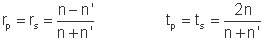
Cuando el botón "Coeficientes de Fresnel" ha sido pulsado (opción activa por defecto al entrar en el programa), se muestra con diferentes colores la variación de los coeficientes de Fresnel con el ángulo de incidencia. Un punto amarillo superpuesto sobre la gráfica indica el ángulo de incidencia seleccionado. Existen varios casos de particular interés:
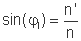
ángulo que se muestra en la gráfica. En este caso, se tiene:
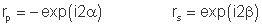
es decir, los dos coeficientes de reflexión tienen módulo 1 y entre las dos componentes sólo hay un desfase 2(β-α)-π (el ángulo π hace referencia al signo negativo de rp), con
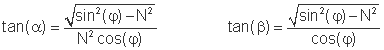
donde
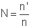
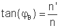
Pulsando el botón "Polarización" se activa una nueva ventana, en la que se muestran las elipses de polarización de la luz incidente, reflejada y transmitida, cada una con los mismos colores que los rayos correspondientes. La escala de los ejes va entre 0 y 1, en el caso de que ésta cambie se indica la posición de los nuevos valores. Se muestran también las características de la onda incidente, que son las que se han introducido en la ventana "Polarización" y que se pueden modificar accediendo a dicha ventana.
En el caso de que haya reflexión total, no se pinta la elipse de polarización transmitida (azul), ya que no existe. Además, se muestran los valores de los ángulos 2α (angp) y 2β (angs), y también el desfase total entre la componente s y p para la luz reflejada, que será el que llevaba la luz incidente más (angs-angp-π). Se puede ver cómo éste varía con el ángulo de incidencia y los índices, y cómo por reflexión total se puede obtener luz polarizada elíptica a partir de luz incidente polarizada linealmente.
Por otra parte, se puede observar cómo para un ángulo de incidencia igual al de Brewster, la luz reflejada está polarizada linealmente en la dirección perpendicular al plano de incidencia.
En esta ventana se estudia la reflexión cuando la luz incide sobre un medio isótropo de conductividad no nula. En este caso el índice de refracción del segundo medio es complejo,
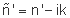
donde n' y k (coeficiente de extinción) son constantes reales y positivas relacionadas con la constante dieléctrica y la conductividad del medio. En el programa n' puede variar entre 0.1 y 3.5 y k puede variar entre 0 (caso "dieléctricos") y 5.
Las fórmulas de Fresnel anteriores continúan siendo válidas pero considerando el índice de refracción complejo para el segundo medio. Los coeficientes de reflexión, después de algunas operaciones, resultan:
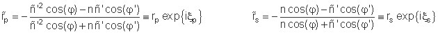
donde todas les cantidades son reales excepto el índice de refracción del segundo medio y el producto
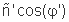
y se ha tenido en cuenta que la ley de Snell sigue siendo válida:
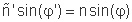
Aquí φ' tiene un sentido formal y su interpretación no es geométrica.
Como los coeficientes de Fresnel anteriores son complejos, las ondas reflejadas pueden sufrir cambios de fase (ξp y ξs para la componente paralela y perpendicular, respectivamente), que dependen tanto de los índices de refracción de los dos medios como del ángulo de incidencia. Estos parámetros se pueden modificar con las barras de desplazamiento. Se muestra también el desfase total entre la componente s y p para la luz reflejada, que será el que llevaba la luz incidente más (ξs-ξp). Cabe destacar cómo en el caso que en la reflexión no se introduzca un desfase adicional entre las dos componentes, las ondas incidente y reflejada giran en sentido opuesto (si una es dextrógira, la otra es levógira, y viceversa). Esto es sólo consecuencia de que cuando describimos el estado de polarización de estas dos ondas las estamos mirando desde lados opuestos (siempre se debe observar la onda en el sentido en el que avanza).
En el caso de incidencia normal, se recuperan las fórmulas que se han visto para los dieléctricos pero con el índice de refracción complejo, es decir:
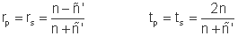
El caso de la luz transmitida requiere un análisis más exhaustivo. Aquí sólo se estudia el caso de incidencia normal, para el cual el factor de transmisión T, definido como el cociente entre la energía por unidad de área transmitida respecto a la incidente, resulta:
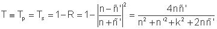
(R es el factor de reflexión). La onda transmitida se puede escribir como una onda plana que se propaga en el medio conductor en la dirección z (perpendicular a la superficie de separación) y con un índice de refracción complejo. Su campo eléctrico se puede escribir como:
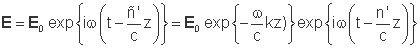
Esto corresponde a una onda plana que se propaga en un medio de índice n' pero con una amplitud que decae exponencialmente con la distancia recorrida en el medio (se ha considerado que z=0 coincide con la superficie de separación). Esta dependencia se muestra en una gráfica, así como la distancia que debe recorrer la onda dentro del medio conductor para que su amplitud decaiga en un factor 1/e, que se llama profundidad de penetración (zp) y caracteriza al medio:
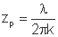
λ es la longitud de onda de la luz y también se puede modificar con una barra de desplazamiento.
| Polarización | Dieléctricos | Conductores | |||
| Amplitud onda p | Ap | Ángulo de incidencia | φ | Ángulo de incidencia | φ |
| Amplitud onda s | As | Ángulo de refracción | φ' | Longitud de onda | λ |
| Desfase | δ | Ángulo de Brewster | φB | angp | ξp |
| Ángulo límite | φl | angs | ξs | ||
| Reflexión total | Desfase total | δ+ξs-ξp | |||
| angp | 2α | Profundidad de penetración | zp | ||
| angs | 2β | ||||
| Desfase total | δ+2(β-α)-π |